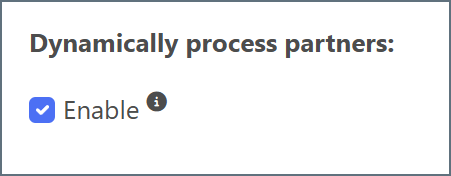
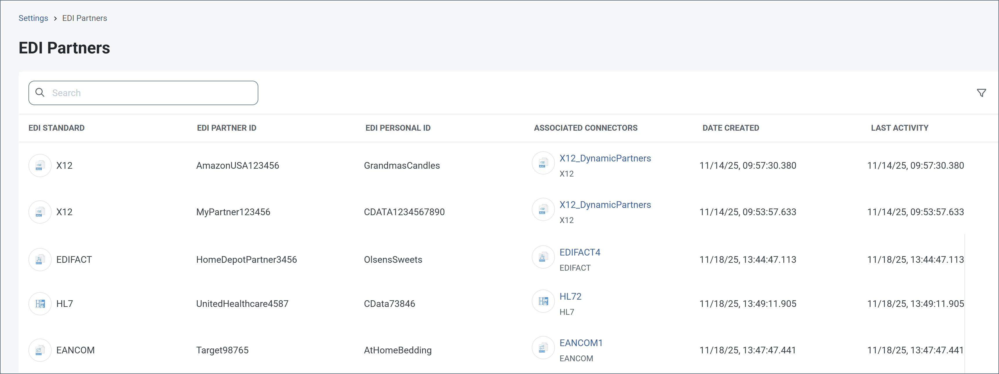
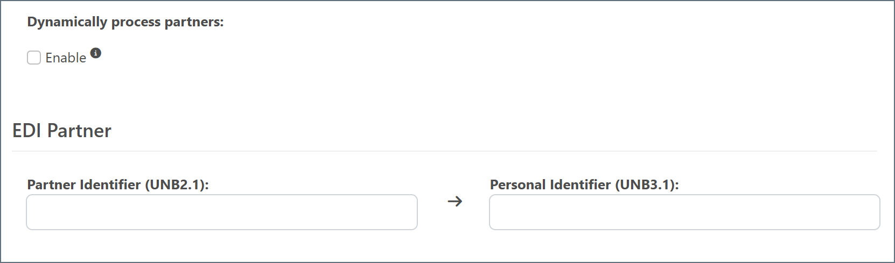
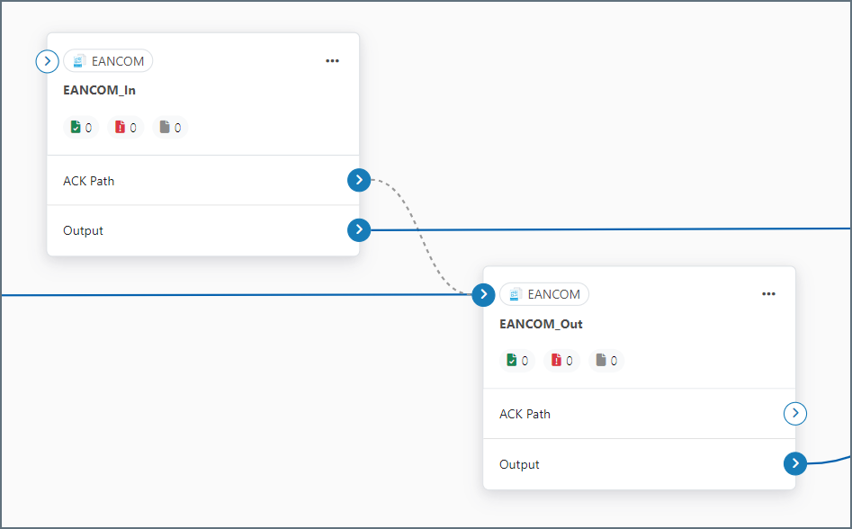
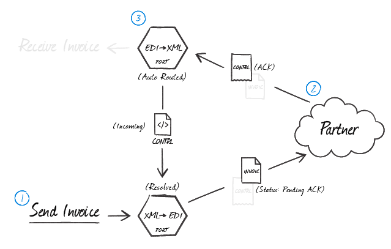
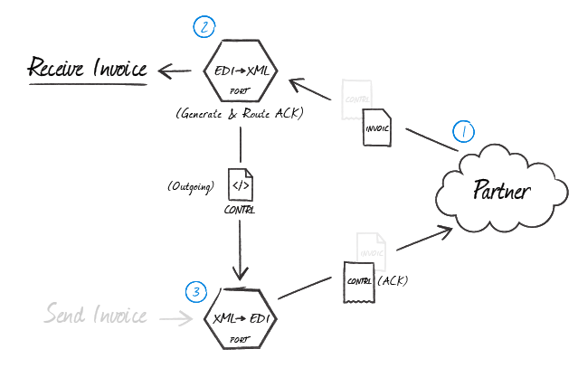

EANCOM Connector
Version 26.1.9509
Version 26.1.9509
EANCOM Connector
EANCOM connectors support generating EANCOM documents (also known as GS1 documents) from XML or converting EANCOM documents into XML.
Key Capabilities
- Full bidirectional translation between EANCOM and XML formats
- Comprehensive interchange header validation and generation
- Support for multiple EANCOM versions with automatic schema detection
- Interchange and functional acknowledgment support
Overview
When receiving EANCOM documents, EANCOM connectors validate interchange headers and convert the EANCOM document into XML. This is useful as a staging step, because XML is the primary format that CData Arc uses to manipulate data within a flow. The EANCOM connector automatically reads the input file to determine the appropriate schema, then parses the document according to this schema.
When generating EANCOM documents, EANCOM connectors convert XML into EANCOM document syntax and apply the appropriate interchange headers. This is useful as the final step for creating an EANCOM document, after the XML data has been fetched and transformed elsewhere in the flow.
Connector Configuration
This section contains all of the configurable connector properties.
Settings Tab
Translation Configuration
Settings related to the core operation of the connector.
- Connector Id The static, unique identifier for the connector.
- Connector Type Displays the connector name and a description of what it does.
- Connector Description An optional field to provide a free-form description of the connector and its role in the flow.
- Translation Type Whether the connector should convert EANCOM documents into XML, or generate EANCOM documents from XML.
- Dynamically process partners When enabled, the connector automatically identifies and tracks trading partner relationships from EDI transactions. When disabled, you must manually define the partner relationship. See Defining Trading Partner Relationships for more information.
EDI Partner
- Partner Identifier (UNB2.1) The unique Id identifying the sending party in the EANCOM communication. When you are generating an EANCOM document, this should be your identifier. Only applicable when Dynamically process partners is unchecked.
- Recipient Identifier (UNB3.1) The unique Id identifying the receiving party in the EANCOM communication. When you are generating an EANCOM document, this should be your trading partner’s identifier. Only applicable when Dynamically process partners is unchecked.
Interchange Settings
Settings related to the EANCOM interchange headers. When converting EANCOM documents into XML, the document headers are validated against these settings; when generating EANCOM documents from XML, these settings are used to generate document headers.
- Syntax Identifier (UNB1.1) Identifies the character set used in the EANCOM document.
- Syntax Version (UNB1.2) In combination with the Syntax Identifier, determines the syntax to be used in the EANCOM document. Based on your selection here, other interchange setting options appear or disappear on the Advanced tab.
- Partner Code Qualifier (UNB2.2) The qualifier for the Sender Identifier, which provides context to the value (for example, an EAN location number).
- Personal Code Qualifier (UNB3.2) The qualifier for the Recipient Identifier, which provides context to the value (for example, an EAN location number).
- Test Indicator (UNB11) Whether the interchange is in test mode or production mode. If you check this, interchange headers are not validated when documents are received.
- Functional Group Check this to automatically add the sender and recipient identifiers to the Functional Group Settings on the Advanced tab.
Acknowledgments
Settings related to generating and requesting acknowledgments.
- Technical acknowledgment (CONTRL) Whether a technical CONTRL ACK should be returned (when receiving) and requested (when sending). A technical acknowledgment serves as a receipt of the interchange.
- Functional acknowledgment (CONTRL) Whether a functional CONTRL ACK should be returned (when receiving) and requested (when sending). A functional acknowledgment serves as an indication of acceptance or rejection of the received interchange.
Automation Tab
Automation
Settings related to the automatic processing of files by the connector.
- Send A toggle that instructs the connector to automatically send files when they are ready.
- Resend Interval The interval the connector waits before resending a file that received a negative ACK. For example, if a trading partner receives the file but something is wrong with it and they send back a negative ACK, this setting specifies how long to wait before sending the file again.
- Max Attempts (async) The maximum number of times the connector processes the input file when a functional ACK is requested. Success is based on the return of a functional ACK within the Resend Interval. If a successful functional ACK is not returned, the connector resends the file until Max Attempts is reached. If this is set to 0, the connector resends the file indefinitely.
Performance
Settings related to the allocation of resources to the connector.
- Max Workers The maximum number of worker threads consumed from the threadpool to process files on this connector. If set, this overrides the default setting on the Performance Settings portion of the Advanced Settings page.
- Max Files The maximum number of files sent by each thread assigned to the connector. If set, this overrides the default setting on the Performance Settings portion of the Advanced Settings page.
Alerts Tab
Settings related to configuring alerts and Service Level Agreements (SLAs).
Connector Email Settings
Before you can execute SLAs, you need to set up email alerts for notifications. Clicking Configure Alerts opens a new browser window to the Settings page where you can set up system-wide alerts. See Alerts for more information.
Service Level Agreement (SLA) Settings
SLAs enable you to configure the volume you expect connectors in your flow to send or receive, and to set the time frame in which you expect that volume to be met. CData Arc sends emails to warn the user when an SLA is not met, and marks the SLA as At Risk, which means that if the SLA is not met soon, it will be marked as Violated. This gives the user an opportunity to step in and determine the reasons the SLA is not being met, and to take appropriate actions. If the SLA is still not met at the end of the at-risk time period, the SLA is marked as violated, and the user is notified again.
To define an SLA, click Add Expected Volume Criteria.
- If your connector has separate send and receive actions, use the radio buttons to specify which direction the SLA pertains to.
- Set Expect at least to the minimum number of transactions (the volume) you expect to be processed, then use the Every fields to specify the time frame.
- By default, the SLA is in effect every day. To change that, uncheck Everyday then check the boxes for the days of the week you want.
- Use And set status to ‘At Risk’ to indicate when the SLA should be marked as at risk.
- By default, notifications are not sent until an SLA is in violation. To change that, check Send an ‘At Risk’ notification.
The following example shows an SLA configured for a connector that expects to receive 1000 files every day Monday-Friday. An at-risk notification is sent 1 hour before the end of the time period if the 1000 files have not been received.

Note: You can turn off SLA alerts if necessary. This can be useful during maintenance windows. Click Settings on the navbar, then navigate to Alerts > General Alerts. Click the tablet and pencil icon to edit, and uncheck the SLA Alerts setting.
Advanced Tab
EDI Delimiters
Settings that specify which characters separate elements, segments, etc.
- Data Element Separator The character that separates individual data elements in the document.
- Component Element Separator The character that separates elements within a composite data structure in the document.
- Segment Terminator The character that indicates the end of a segment in the document.
- Release Char The character that releases (escapes) the next character, overriding its usual meaning. This allows reserved characters to appear as data within documents, as long as they are preceded by the Release Char.
- Repetition Char The character that indicates repetition of element values.
- Suffix Appended to the Segment Terminator to distinguish segments.
Interchange Settings
Additional settings related to the EANCOM interchange headers. These options appear or disappear based on the Syntax Version specified on the Settings tab.
- Service Code List Directory Version Number (UNB1.3) Further specifies the syntax to be used in the EANCOM document. Only applicable for EANCOM syntax version 4.
- Character Encoding (UNB1.4) Specifies the character encoding (such as ASCII or UTF-8). Only applicable for EANCOM syntax version 4.
- Address for Reverse Routing (UNB2.3) The optional address in the sender’s system to which responding interchanges should be sent. Only applicable for EANCOM syntax versions prior to version 4.
- Partner Internal ID (UNB2.3) An additional sender identifier to facilitate internal routing of response interchanges. Only applicable for EANCOM syntax version 4.
- Partner Internal Sub-Identification (UNB2.4) Further identifies the sender when sub-level identification is required. Only applicable for EANCOM syntax version 4.
- Routing Address (UNB3.3) The optional address in the recipient’s system to which interchanges should be routed. Only applicable for EANCOM syntax versions prior to version 4.
- Personal Internal ID (UNB3.3) An additional recipient identifier to facilitate internal routing of received interchanges. Only applicable for EANCOM syntax version 4.
- Personal Internal Sub-Identification (UNB3.4) Further identifies the recipient when sub-level identification is required. Only applicable for EANCOM syntax version 4.
- Partner Password (UNB6.1) Reference or password to gain access to the recipient’s system.
- Partner Password Qualifier (UNB6.2) The qualifier that provides context to the Partner Password, if applicable.
- Application Reference ID (UNB7) Identifies the application group to which the messages in the interchange relate.
- Processing Priority Code (UNB8) Code for requesting processing priority for the interchange.
- Communication Agreement (UNB10) Defines the type of communication agreement controlling the interchange.
Functional Group Settings
Settings related to the functional group headers of EANCOM documents. These optional identifiers can help group similar interchanges together, or facilitate sub-addressing within an organization.
- Application Partner Identifier (UNG2.1) Identifies the application sending the document (such as a division, branch, or computer system).
- Application Personal Identifier (UNG2.1) Identifies the application for which the document is intended.
Advanced Settings
Settings not included in the previous categories.
- Batch Transactions An interchange can contain multiple transactions. When this is not checked, the connector creates a separate output file for each transaction in the interchange. When checked, the connector groups all transactions into a single output file.
- Encoding Specifies the character encoding (such as ASCII or UTF-8).
- Expand Qualifier Values When checked, XML elements containing an EDI qualifier include child elements containing the qualifier code and value. For example:
<N101><Code>ST</Code><Value>Ship To</Value></N101>. - Functional Acks By default, all functional acknowledgments (997, 999) are routed to the connector selected in the flow diagram, and XML translations are not received in the Output tab. Check this to have the translated acknowledgment also be included in the Output tab. This allows functional acknowledgments to be integrated into a destination source in addition to new EDI documents.
- Generate Description As When translating EANCOM into XML, descriptions of the EANCOM segments and elements can be provided as context for the EANCOM data. Use this dropdown to choose whether to add this context as an XML comment or as XML attributes.
- Local File Scheme A scheme for assigning filenames to messages that are output by the connector. You can use macros in your filenames dynamically to include information such as identifiers and timestamps. For more information, see Macros.
- Nest Loops When checked, the connector detects EDI structures that have hierarchical relationships embedded in the EDI data, and generates XML with these hierarchical relationships represented as parent-child relationships. See Master-Detail Hierarchy: Translating CPS Loops for more information.
- Processing Delay The amount of time (in seconds) by which the processing of files placed in the Input folder is delayed. This is a legacy setting. Best practice is to use a File connector to manage local file systems instead of this setting.
- Strict Schema Validation Whether the connector should Ignore, Warn, or Fail when the following are detected: repeat counts above the allowed number, missing required elements or segments, invalid qualifier and code values, disallowed element lengths, and invalid element values. Choosing Disable turns off the schema validation checks.
- Track UNB2.1 Whether to add UNB2.1 values as tracked headers to processed messages.
- Track UNB3.1 Whether to add UNB3.1 values as tracked headers to processed messages.
- Track Transaction Types Whether to add transaction types as tracked headers to processed messages.
- Validate Identifiers Check this to ensure that the identifiers in the translated document match the identifiers in the connector’s configuration.
- Duplicate File Action How the connector should behave when it receives a message with a control number that the connector has seen before (a duplicate). When set to
Ignore, the connector silently skips the duplicate and continues processing. When set toWarn, the connector processes the file but returns a warning. When set toFail, the connector does not accept the file and returns an error. - Upload Schema Use this to upload a schema and install it in the connector’s Schema folder. If a schema already exists, you are asked if you want to overwrite it.
- Reset State EDI connectors keep track of control numbers that have been used and increment that number to ensure that future runs do not duplicate data. Use this button to reset the counter to its initial state without changing any of the configured settings.
Message
- Save to Sent Folder Check this to copy files processed by the connector to the Sent folder for the connector.
- Sent Folder Scheme Instructs the connector to group messages in the Sent folder according to the selected interval. For example, the Weekly option instructs the connector to create a new subfolder each week and store all messages for the week in that folder. The blank setting tells the connector to save all messages directly in the Sent folder. For connectors that process many messages, using subfolders helps keep messsages organized and improves performance.
Logging
- Log Level The verbosity of logs generated by the connector. When you request support, set this to Debug.
- Log Subfolder Scheme Instructs the connector to group files in the Logs folder according to the selected interval. The Weekly option (which is the default) instructs the connector to create a new subfolder each week and store all logs for the week in that folder. Leaving this setting blank tells the connector to save all logs directly in the Logs folder. For connectors that process many transactions, using subfolders helps keep logs organized and improves performance.
- Log Messages Check this to have the log entry for a processed file include a copy of the file itself. If you disable this, you might not be able to download a copy of the file from the Input or Output tabs.
Miscellaneous
Miscellaneous settings are for specific use cases.
- Other Settings Enables you to configure hidden connector settings in a semicolon-separated list (for example,
setting1=value1;setting2=value2). Normal connector use cases and functionality should not require the use of these settings.
XML to EANCOM
When generating EANCOM files, select XML to EANCOM as the Translation Type. The application reads the header information for the interchange, functional group, and message sections from the settings configured on the Settings tab. These settings include the sender identifier and code qualifier, receiver identifier and code qualifier, and so on.
Once you have configured the connector with the settings from your trading partner agreement, click the Input tab and select More > Create Test Files. The application creates a set of test XML files that provide example data of what the XML should look like for the connector to generate an EANCOM document. You can also select the documents and click Send to see the generated EANCOM documents.
EANCOM to XML
When generating XML, select EANCOM to XML as the Translation Type. The application only processes EANCOM files when this option is selected. You need to configure the settings for the trading partner agreement on this page for the application to validate the information in EANCOM documents during processing. XML files are generated into the Output folder for this connector.
Click the Input tab and select More > Create Test Files to create test EANCOM files for several EANCOM documents. You can select these documents and click Send to see the generated XML.
Defining Trading Partner Relationships
By default, the Dynamically process partners checkbox on the connector Settings tab is enabled. This means that the connector automatically identifies and tracks trading partner relationships from EDI transactions. In this case, no manual partner configuration is required because the connector dynamically manages all partners up to your license limit, and notifies you when you reach the limit. The connector keeps track of the identifiers based on the files that it processes, which means that you might be able to use a single connector for all of your partners.

The EDI Partners tab in the connector’s configuration tabs is only enabled when Arc is dynamically processing partners. It is populated with the partner and personal identifiers of each relationship that the connector identifies, as well as the last processing date of a file for that partner. You can delete partners whose last processed date is more than 30 days ago in the EDI Partners tab by hovering over the partner and clicking the bin icon.

When this setting is enabled, all partner relationships identified by the connector are automatically tracked for licensing purposes. They appear in the Connector Usage portion of the Settings > License tab. Here you can view the partner and personal identifiers, the associated connectors, and date information.

If you disable this setting, you must explictly configure a partner relationship in the Partner Identifier and Personal Identifier fields on the Settings tab, as shown in the following image.

Manually defined partner relationships also appear in the Connector Usage portion of the Settings > License tab.
Use With the XML Map Connector
In accordance with Arc convention, the EANCOM connector does one of two things: it receives XML input or generates XML output. To ensure that the input and output files have the correct XML structure, CData strongly recommends that you use the XML Map connector as the previous step in the flow when generating outbound EANCOM documents, or as the following step in the flow when receiving inbound EANCOM documents. The interaction between the XML Map connector and the EANCOM connector is made simple by the Upload Test File feature described below.
Upload Test File
Follow these steps to generate an XML representation of an input file:
- In the Input tab of the connector, click the More dropdown and click Upload Test File.
- Navigate to a file on disk that you want to model as XML, select it, and click OK.
- Connect the EANCOM connector to an XML Map connector in the flow. This connection can go in either direction: inbound to the XML Map connector, or outbound from the XML Map connector.
The XML Map connector automatically detects the structure of the test file. Based on where you placed the EANCOM connector, the file appears in the Source File or Destination File drop-down menu of the XML Map connector.
Note: XML Map connectors require both a source and destination template, so the remaining template must be set based on the structure the data originates from, or the structure it should be converted to. For example, if the data from the EANCOM document needs to be inserted into a database, the other template in the XML Map connector would be the XML model of a database insert. See the XML Map connector’s Using the Mapping Editor for more information on creating the mapping between two template files.
Acknowledgements
Acknowledgments are routed to the connector specified by the grey dotted line in the flow diagram, as shown in the following image:

The specified connector generates acknowledgments using the transaction data received by the current connector. The specified connector adds interchange headers and passes the acknowledgment along in the flow like any other message. Thus this should typically be set to a pre-configured EANCOM connector that generates outbound documents for the intended recipient.
Acknowledgments can be automatically generated and processed by the application. There are two commonly requested types of acknowledgments used in EANCOM communications, interchange and functional. Both of the acknowledgments types are classified as as EANCOM CONTRL message.
When EDI messages that require an acknowledgement have not received that acknowledgement, a Pending-Timeout header is added to the message. The message has a Pending status while it waits for its ACK. If it does not receive the ACK within the allotted time, the Pending-Timeout header is populated with the date and time when the message status changed to Error. When the ACK is received and the message is updated to Success, a new header is added with an empty string value.
Interchange Acknowledgments
This is an indication that an interchange has taken place between the two parties (though not necessarily that any individual message has been exchanged). They are automatically generated in response to a request in the interchange.
Functional Acknowledgments
Functional acknowledgments are an indication that an individual message such as an Invoice or PO has been accepted. These are generated in response to a bidirectional agreement by both parties.
Message Originator
Requesting Acknowledgements
EANCOM connectors in XML-to-EDI mode can be configured so that both interchange and functional acknowledgments can be requested for a message. Select the Technical acknowledgment (CONTRL) and Functional acknowledgment (CONTRL) checkboxes on the Settings tab to direct the connector to maintain a Pending ACK status for the transmission until the appropriate acknowledgments have been returned and processed.

The illustration above shows a complete message exchange from the standpoint of the message originator. An EANCOM connector in XML-to-EDI mode generates the document to be exchanged (1) and holds it in a Pending ACK state. The trading partner processes the transmission in their business logic and creates acknowledgments in accordance with the configured exchange parameters and the bidirectional agreement between parties (2). When the acknowledgments are returned, they are parsed with and an EANCOM connector in EDI-to-XML mode and routed to the original EANCOM connector (XML-to-EDI) to resolve the status of the transfer (3).
Processing Acknowledgements
When interchange and functional EANCOM acknowledgments are received at an EANCOM connector in EDI-to-XML mode, the connector can be configured to automatically route any detected acknowledgments to the EANCOM connector that first generated the transmission. In the flow diagram, drag the grey circle from the receiving (EDI-to-XML) EANCOM connector onto the originating (XML-to-EDI) EANCOM connector.
The configured (XML-to-EDI) EANCOM connector pairs the acknowledgments to the original message and resolves the matching message.
Message Recipient
Generating Acknowledgements
When an EANCOM connector in EDI-to-XML mode processes received messages from the originator and generates XML, tell the connector to automatically generate CONTRL acknowledgments by selecting the Acknowledgment check boxes in the Settings tab. Route these acknowledgments to an EANCOM connector in XML-to-EDI mode to generate the EANCOM acknowledgement. In the flow diagram, drag the grey circle onto the (XML-to-EDI) EANCOM connector that generates EANCOM documents for this partner.

As shown in the diagram above, when a partner sends a message where an acknowledgment is expected (1), the (EDI-to-XML) EANCOM connector configured for that partner automatically generates an acknowledgment (2) as an XML file containing the transactional information relevant for that file. This XML acknowledgment must be routed back to an (XML-to-EDI) EANCOM connector (3) so that all of the EDI party agreement settings are used when generating the EANCOM file that is sent back to your trading partner.
Master-Detail Hierarchy: Translating CPS Loops
In EDI documents, most hierarchical relationships are represented by the order of EDI segments. Some EDI structures, like CPS Loops (which are found in DESADV documents), do not follow this convention and instead have the hierarchical relationships embedded in the EDI element data itself. This can make it difficult to preserve these hierarchical relationships when converting the EDI data to XML.
The EANCOM connector supports preserving hierarchical relationships in CPS segments via the Nest Loops setting on the Advanced tab. When enabled, the connector parses the elements in the CPS segments to determine which segments “belong to” other segments in a hierarchical relationship. These hierarchical relationships are reflected in the output XML as parent-child relationships: in other words, this setting converts hierarchy implied by the EDI content into hierarchy represented by the XML structure.
This section briefly explains both how hierarchy is encoded in CPS data, and how this hierarchy is converted into XML when Nest Loops is enabled.
CPS Hierarchy
All CPS segments have two values that help establish hierarchy:
- an Id value, which identifies the current CPS segment (this value is stored in CPS01, or the first element in a CPS segment)
- a parent-Id value, which identifies the current CPS segment’s hierarchical parent (this value is stored in CPS02, or the second element in a CPS segment)
For example, a CPS segment has an Id value of ‘2’. If the next CPS segment should “belong to” this prior segment in a hierarchical relationship, the next CPS segment’s parent-Id should also be ‘2’.
If a CPS segment’s parent-ID is ‘0’, the segment does not have a parent (it is at the top level of the hierarchy).
Converting CPS Hierarchy to XML
When Nest Loops is enabled, the EANCOM connector handles the conversion of CPS hierarchy to XML hierarchy automatically. The connector parses the Id and parent-Id values from CPS segments and ensures that the resulting XML elements are appropriately nested (indented) inside the elements representing their parents.
In other words, if segmentA has a parent-Id value that is equal to segmentB, the resulting XML has segmentA as a child of segmentB. In this way, the hierarchical relationships are preserved in the XML structure when the EDI data is translated.
Macros
Using macros in file naming strategies can enhance organizational efficiency and contextual understanding of data. By incorporating macros into filenames, you can dynamically include relevant information such as identifiers, timestamps, and header information, providing valuable context to each file. This helps ensure that filenames reflect details important to your organization.
CData Arc supports these macros, which all use the following syntax: %Macro%.
| Macro | Description |
|---|---|
| ConnectorID | Evaluates to the ConnectorID of the connector. |
| Ext | Evaluates to the file extension of the file currently being processed by the connector. |
| Filename | Evaluates to the filename (extension included) of the file currently being processed by the connector. |
| FilenameNoExt | Evaluates to the filename (without the extension) of the file currently being processed by the connector. |
| MessageId | Evaluates to the MessageId of the message being output by the connector. |
| RegexFilename:pattern | Applies a RegEx pattern to the filename of the file currently being processed by the connector. |
| Header:headername | Evaluates to the value of a targeted header (headername) on the current message being processed by the connector. |
| LongDate | Evaluates to the current datetime of the system in long-handed format (for example, Wednesday, January 24, 2024). |
| ShortDate | Evaluates to the current datetime of the system in a yyyy-MM-dd format (for example, 2024-01-24). |
| DateFormat:format | Evaluates to the current datetime of the system in the specified format (format). See Sample Date Formats for the available datetime formats |
| Vault:vaultitem | Evaluates to the value of the specified vault item. |
Examples
Some macros, such as %Ext% and %ShortDate%, do not require an argument, but others do. All macros that take an argument use the following syntax: %Macro:argument%
Here are some examples of the macros that take an argument:
- %Header:headername%: Where
headernameis the name of a header on a message. - %Header:mycustomheader% resolves to the value of the
mycustomheaderheader set on the input message. - %Header:ponum% resolves to the value of the
ponumheader set on the input message. - %RegexFilename:pattern%: Where
patternis a regex pattern. For example,%RegexFilename:^([\w][A-Za-z]+)%matches and resolves to the first word in the filename and is case insensitive (test_file.xmlresolves totest). - %Vault:vaultitem%: Where
vaultitemis the name of an item in the vault. For example,%Vault:companyname%resolves to the value of thecompanynameitem stored in the vault. - %DateFormat:format%: Where
formatis an accepted date format (see Sample Date Formats for details). For example,%DateFormat:yyyy-MM-dd-HH-mm-ss-fff%resolves to the date and timestamp on the file.
You can also create more sophisticated macros, as shown in the following examples:
- Combining multiple macros in one filename:
%DateFormat:yyyy-MM-dd-HH-mm-ss-fff%%EXT% - Including text outside of the macro:
MyFile_%DateFormat:yyyy-MM-dd-HH-mm-ss-fff% - Including text within the macro:
%DateFormat:'DateProcessed-'yyyy-MM-dd_'TimeProcessed-'HH-mm-ss%